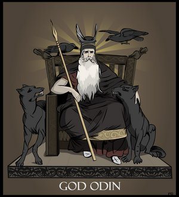

Othin was called by many names. These are many of his titles, or heiti.
- Alfóðr
- "Allfather", "father of all"
- Farmatýr
- God of Cargoes
- Fimbul
- The great
- Gautr
- Father
- Herjan
- Ruler
- Hroptatýr
- Crier of the gods
- Ãski
- God of wishes
- Veratýr
- Lord of men
- Hangatyr
- the hanged god
- Hárr
- High
- Jafnhárr
- Even as high
- Ãriði
- Third
- Hnikuðr
- Overthrower
- Sigföðr
- Father of Victory
- Sigtyr
- God of victory
- Bölverkr
- Ill-doer
- Fjölsviðr
- Wide in wisdom
- Gangleri
- Wayweary
- Glapsviðr
- Swift in deceit
- Herteitr
- Host glad, or Glad of War
- Hnikarr
- Overthrower
- Saðr
- Truthful
- Svipall
- Changing
- Sanngetall
- Truthful
- Vakr
- Wakeful
- Yggr
- Terrible
- Ãekkr
- Much loved
- Báleygr
- Flaming-eyed
- Bileygr
- Shifty-eyed
- Fjölnir
- Many-shaped
- GrÃmnir
- Hooded
- Göndlir
- Wand bearer
- Hárbarðr
- Greybeard
- Hjálmberi
- Helmet bearer
- SÃðhöttr
- Broad hat
- SÃðskeggr
- Long beard
- AtrÃðr
- Rider
- Biflindi
- (?)
- Ginnregin
- (?)
- Helblindi
- Hel blinder
- Jálkr
- Gelding
- Kjalarr
- Keel
- Ãmi
- Shouter
- Sviðurr
- Changing (?)
- Sviðrir
- Changing (?)
- Viðurr
- ?
- Ãrór
- ?
- Ãuðr
- ?
- Ãundr
- Thunderer
- Uðr
- ?
- Skilfingr
- Shaker
- Váfuðr
- Wanderer
- Valfather
- Receiver (literally: father)of the fallen ones